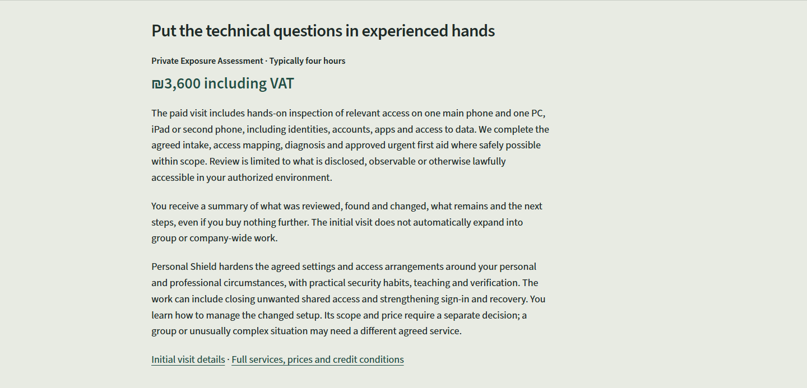
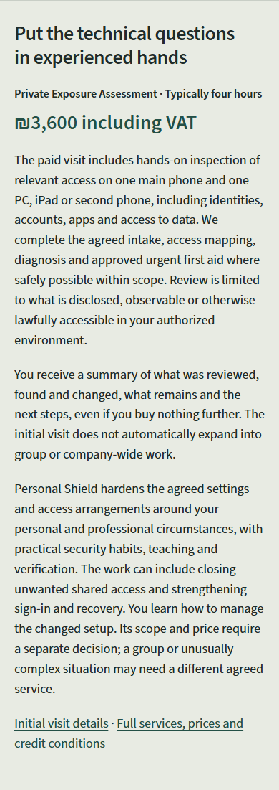
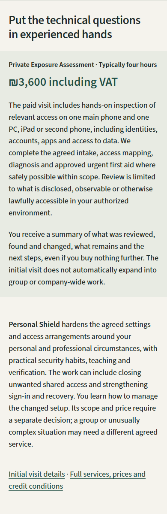
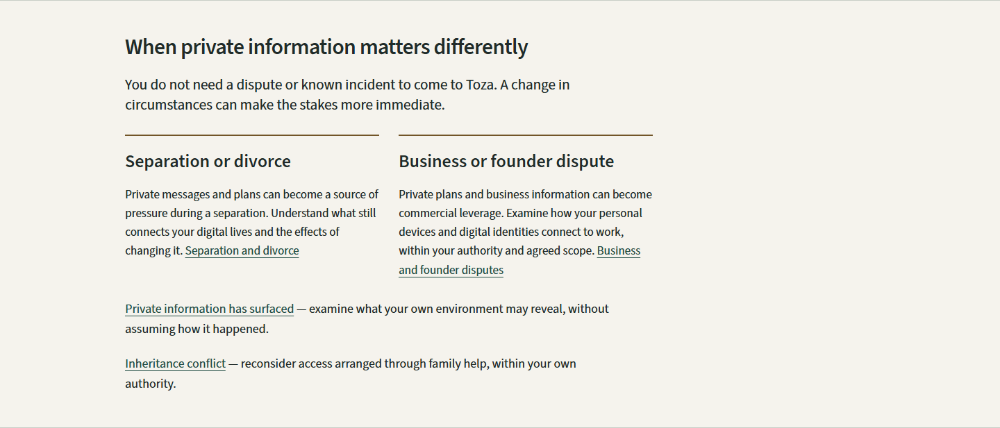
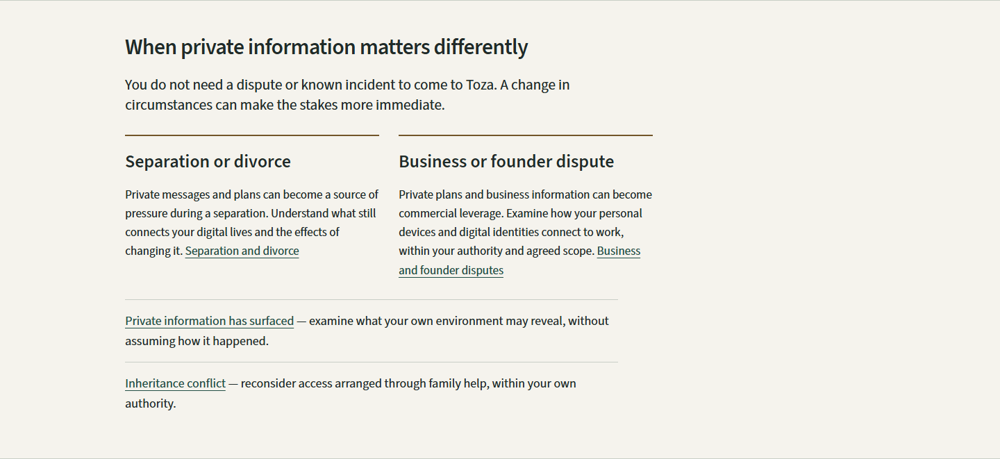
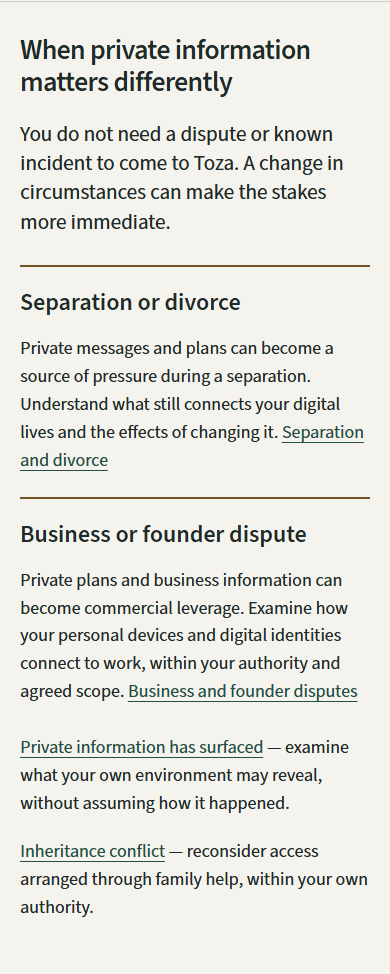
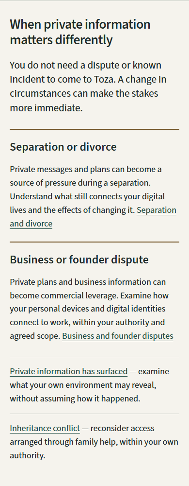

Business: separate Assessment and Personal Shield groups


Desktop · 1440px



Mobile · 390px




Home: supporting situation rows


Desktop · 1440px




Mobile · 390px




Both approved refinements are integrated into the working pages with the same accepted wording. Compare recorded before images and fresh after captures, then inspect the complete working pages. Local preview; publication remains a separate step.






